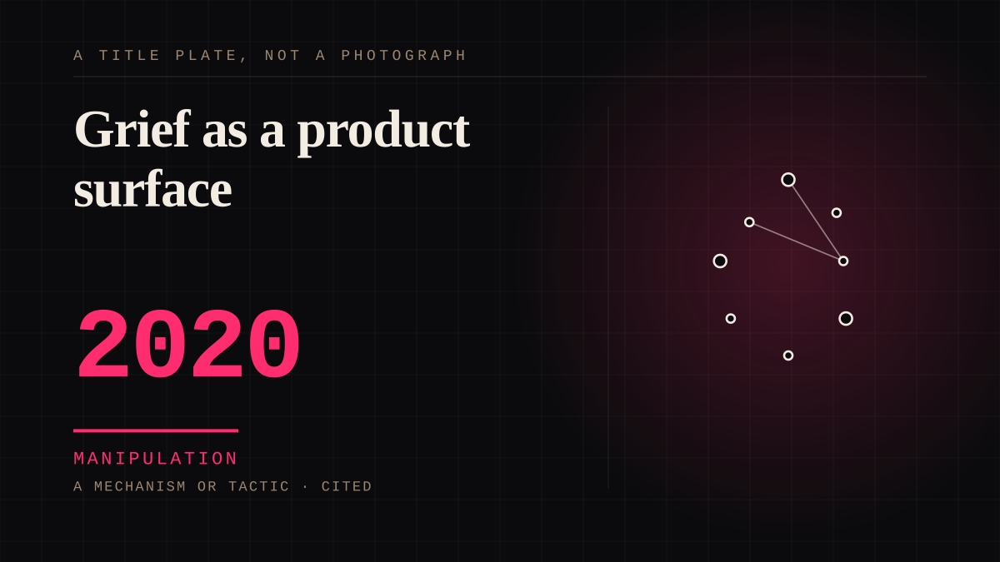

A mechanism or tactic · 2020 · AI
Grief as a product surface
The feature requests of a dead person, the licensing, the posthumous releases, the reunion tour built from a member who cannot appear, and the deepfake resurrection that follows within a year of every death.

There was a widely held assumption that you cannot monetise grief because the bereaved will not tolerate it. That assumption was wrong, and the gap between what the industry expected and what happened is one of the more reliable findings in this whole file.
Manipulation. One-sided attachment engineered for somebody else's benefit. Paid intimacy, parasocial persuasion, sasaeng, grief extraction, the streak. The lane that pays the bills and the lane that causes the most harm, frequently at the same time.
Same story, 2 other entries
Grieving a person you never met1970 → The dead celebrity, generated2024
Where it sits
2010 2010+ · 2020 2026
Provenance · 7 source record(s)
- retrievableTHE FINDING. Asked about the Whitney hologram, a researcher who studies the human-technology relationship answered: 'Yes, we know that [a hologram of] Whitney Houston is not the real Whitney Houston. But it's a chance for us to engage in some of that fan behaviour, something that binds us to one another.' That is this site's entire subject, named by someone studying itDead celebrities are being digitally resurrected. CBC News (2021), reporting Richard Lachman, associate professor at Ryerson University. ↗
- unverifiedThe vocabulary already exists and it is hostile: 'musical necrophilia', Simon Reynolds on holographic performance as 'ghost slavery', and Catherine Shoard in the Guardian on inserting a dead actor as a 'digital indignity'Dead celebrities are being digitally resurrected. CBC News (2021). ↗
- retrievableThe legal position, stated by scholarship: the digital right to be dead is NOT yet recognised as an important legal right. AI can recreate appearance, voice, emotion and memory indistinguishably, and the resulting chatbot DYNAMICALLY LEARNS with further communication. There is no legal or regulatory landscape against which to estate plan to avoid digital resurrectionHaneman, V. J. The Law of Digital Resurrection (University of Georgia School of Law). ↗
- unverifiedAnd what the scholars propose instead: a right of DELETION for the deceased over the source data, rather than testamentary control over the outcome. Refusing the raw material is the only control point that worksHaneman, V. J. The Law of Digital Resurrection. ↗
- unverifiedWHY there is no contract: the common thread among artists whose likenesses get used is unexpected or accidental death, so the image-use clauses were never written. Prince left no will at all, and without one an estate can exploit or license the rights at will. Robin Williams restricted use of his image for 25 years after his death because he foresaw thisDead celebrities are being digitally resurrected. CBC News (2021), reporting Lachman and media lawyer Iain MacKinnon.
- retrievableAnd that the grief is the asset: Pat Houston, estate executor, on the marketing push - 'Before she passed, there was so much negativity around the name; it wasn't about the music anymore... they let all the personal things about their life outweigh why they fell in love with them in the first place.' Monetising the legacy and redeeming the reputation are the same project7 Years After Her Death, Whitney Houston Estate Unveils Slew Of New Projects. NPR (2019), reporting Pat Houston. ↗
- retrievableThe rights are patchier than the audiences assume: fewer than half of US states grant a post-mortem right of publicity, and New York's lasts only forty years. The 2014 Michael Jackson hologram led to Hologram USA suing Pulse Evolution in Nevada, settledSinging Holograms: The Legal Landscape of Posthumous Holographic Performance. Columbia Journal of Law & the Arts. ↗
Connected · 3 out, 3 in
Reported as a story
It sits in
The full timeline → · The database → · See it in the atlas →